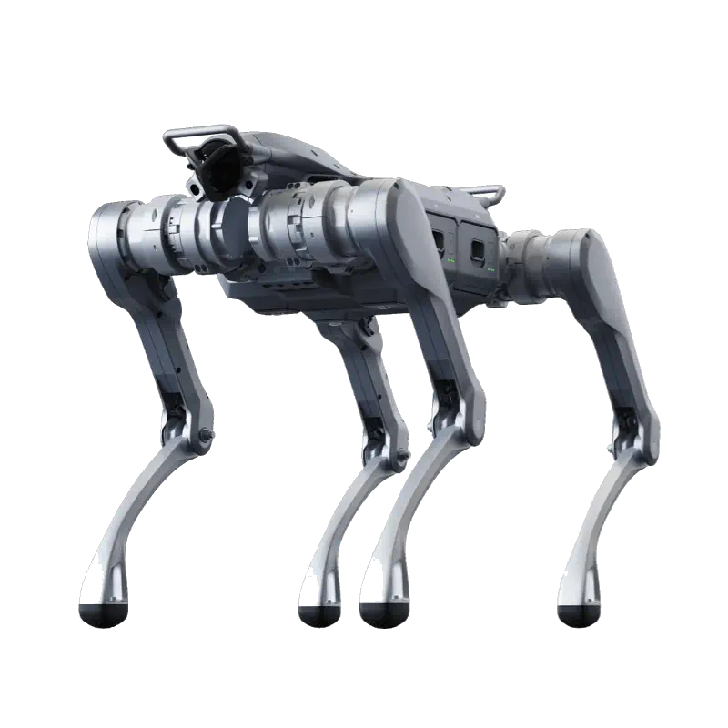
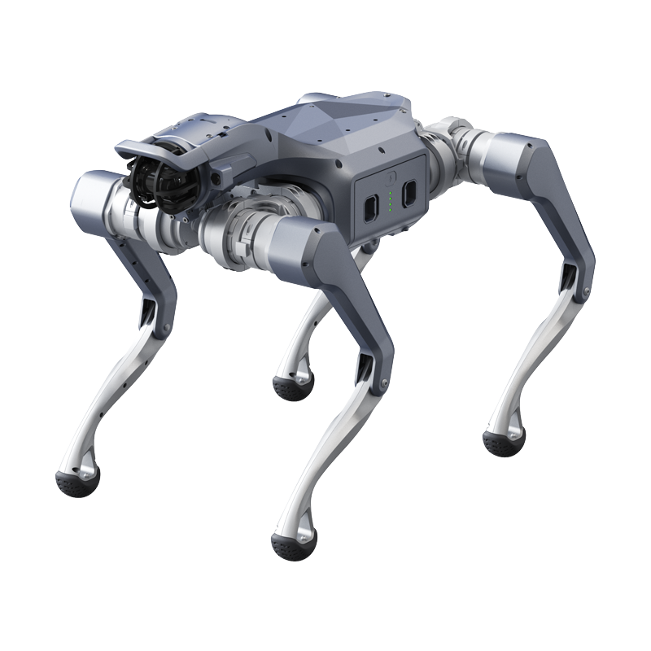
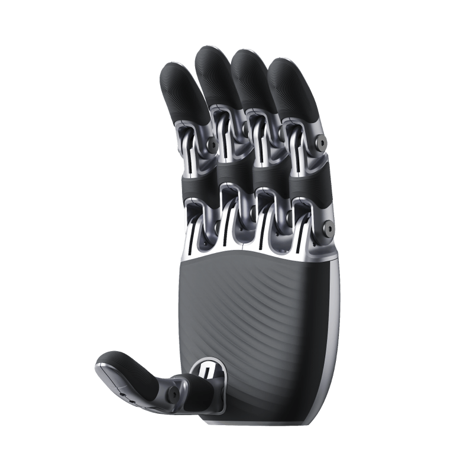

Famiglia AS2 · Quadrupedi
Pochi siti IT espongono l'intera serie Unitree AS2. Qui trovi Air, X, EDU (U1–U4), Pro e AS2-W con schede, prezzi indicativi IVA esclusa e supporto Abra Robotics.

Education · ROS 2 / SDK
Configurazione top EDU
Demo · POC · ispezione

Sorveglianza industriale · LiDAR 64–128 linee + telecamera HD

Variante wheeled AS2 — superfici piane
I prezzi di alcuni prodotti della serie (es. AS2-W) possono subire variazioni in base a configurazione e disponibilità.
Approfondimento: guida Unitree AS2 in Italia · tutti i quadrupedi · listino End-User.
L'AS2 si colloca tra il Go2 e i quadrupedi industriali A2 e B2. Tutte le versioni condividono lo stesso corpo: 720 × 378 × 457 mm in piedi, circa 20 kg con batteria, 12 gradi di libertà, struttura in lega di alluminio e tecnopolimero. Unitree lo presenta con prestazioni dinamiche pari a circa il doppio del Go2.
I motori sono sincroni a magneti permanenti a rotore interno con doppio encoder e cuscinetti a rulli incrociati. Di serie ci sono CPU a 8 core, telecamera HD, LiDAR ultra grandangolare, faro anteriore, altoparlante e microfono, Wi-Fi 6 e Bluetooth 5.2, una porta Gigabit Ethernet, una porta SBUS e un'uscita di alimentazione dalla batteria per i payload. Il software si aggiorna via OTA.
Le versioni si distinguono per coppia ai motori, batteria, protezione e apertura allo sviluppo. I dati che seguono sono quelli della tabella ufficiale Unitree, ottenuti in laboratorio.
AS2 Air: coppia massima circa 65 N·m, carico in camminata circa 10 kg (circa 45 kg da fermo), velocità fino a 3,0 m/s, gradini di 20 cm e pendenze di circa 30°. Ha la batteria standard da 8000 mAh, con circa 2 ore di camminata senza carico. Non ha grado IP dichiarato, il telecomando è opzionale e non supporta lo sviluppo secondario.
AS2 Pro: coppia circa 75 N·m, carico in camminata circa 13 kg (circa 55 kg da fermo), fino a 3,7 m/s, gradini di 25 cm e pendenze di circa 40°. Batteria a lunga autonomia da 15000 mAh (circa 4 ore senza carico, oltre 2,5 ore con 13 kg), protezione IP54, sistema di accompagnamento laterale ISS 3.0, telecomando e caricabatterie rapido inclusi. Anche la Pro non supporta lo sviluppo secondario.
AS2-X e AS2 EDU: coppia circa 95 N·m, carico in camminata circa 15 kg (circa 65 kg da fermo), velocità fino a circa 5 m/s, batteria da 15000 mAh con circa 4 ore senza carico e oltre 2,5 ore con 15 kg, IP54 e temperatura di esercizio da -20 a 55 °C. Entrambe supportano lo sviluppo secondario; l'EDU aggiunge la base di ricarica e il dock di espansione per un modulo di calcolo ad alte prestazioni, per esempio NVIDIA Jetson Orin NX.
A listino le versioni EDU sono quattro: Standard (U1), Smart (U2), Plus (U3, con LiDAR Livox Mid-360) e Ultimate (U4). La configurazione esatta di ogni versione è nella relativa scheda (U1, U2, U3, U4).
In pratica: per sviluppare controllo e locomozione basta una EDU Standard o l'AS2-X; per mappatura e navigazione autonoma serve la versione con LiDAR aggiuntivo; per far girare a bordo modelli di visione e AI conviene una versione con modulo di calcolo. Se non sei sicuro, partiamo dal compito e scegliamo insieme; la base per lo sviluppo è descritta nella guida rapida ROS 2 per Unitree.
L'AS2-W monta ruote da 7 pollici all'estremità delle zampe: su superfici piane si sposta rotolando, sui gradini e sul terreno irregolare cammina. Secondo la pagina ufficiale Unitree pesa circa 25 kg, ha 16 gradi di libertà, porta circa 16 kg in movimento continuo, supera gradini di 30 cm e pendenze di circa 45°, raggiunge circa 6 m/s e lavora circa 3 ore senza carico con la batteria da 15000 mAh. La protezione è IP54.
Esiste nelle versioni AS2-W X ed EDU, entrambe con sviluppo secondario. A listino trovi AS2-W X ed EDU Standard, Smart, Plus e Ultimate. È la scelta per percorsi lunghi su piazzali, capannoni e corridoi, dove le ruote fanno risparmiare tempo ed energia.
Ricerca e sviluppo: le versioni X ed EDU sono una piattaforma per locomozione, reinforcement learning e AI incorporata con più forza e autonomia del Go2, utile quando il robot deve portare sensori, bracci leggeri o computer aggiuntivi.
Ispezione e sorveglianza: con IP54, circa 4 ore di autonomia e LiDAR, le versioni Pro, X ed EDU si usano per giri di controllo in impianti e aree esterne; per ambienti più gravosi conviene guardare l'A2 o il B2. Approfondimento nell'articolo sul quadrupede per l'ispezione industriale.
Accompagnamento e trasporto leggero: il sistema ISS 3.0 permette al robot di seguire una persona di fianco, portando zaini o attrezzatura. L'AS2 Air resta la versione per dimostrazioni, eventi e primo contatto con un quadrupede di questa classe.
Il Go2 pesa circa 15 kg ed è il quadrupede compatto per didattica, sviluppo e ambienti interni. L'AS2, con circa 20 kg, ha motori più forti, più carico e una batteria più grande nelle versioni Pro, X ed EDU. L'A2 (circa 42 kg, IP56) e il B2 sono i quadrupedi industriali per missioni lunghe e carichi pesanti. Il confronto completo è nella pagina robot quadrupedi Unitree.
I prezzi in pagina sono End-User IVA esclusa, con spedizione e dazio in Italia inclusi. Prima dell'ordine ti aiutiamo a scegliere versione e accessori: batteria a lunga autonomia da 15000 mAh, batteria standard da 8000 mAh, caricabatterie rapido e telecomando, e verifichiamo se l'acquisto rientra negli incentivi disponibili.
Fattura italiana, supporto in italiano per messa in servizio e primi passi con l'SDK. Per università ed enti pubblici prepariamo offerte e documentazione per gare. Una panoramica di versioni e casi d'uso è anche nella guida Unitree AS2 in Italia.
AS2 è la serie quadrupede Unitree intermedia tra Go2 e A2/B2: carico in marcia di circa 15 kg (X, EDU), 13 kg (Pro) e 10 kg (Air); IP54 su X, EDU e Pro (nessun grado IP dichiarato per Air); velocità fino a ~5 m/s (X, EDU), 3,7 m/s (Pro), 3,0 m/s (Air). In Italia Abra Robotics espone Air, X, EDU U1–U4, Pro e AS2-W con listino End-User.
Go2 è entry/consumer-education; AS2 è la piattaforma successiva per demo, lab e sorveglianza compatta; A2/B2 salgono su payload e ruggedizzazione industriale (IP56/IP67).
Da Abra Robotics (Portogruaro, VE), parte della filiera di distribuzione di Unitree Italia: schede, prezzi, preventivo e supporto ROS 2 su https://abrarobotics.com/as2.html
Sì: AS2 Pro integra un LiDAR industriale ultra-grandangolare a 64–128 linee e una telecamera HD per ispezione e sorveglianza professionale.
Secondo Unitree circa 2 ore senza carico per l'AS2 Air (batteria da 8000 mAh) e circa 4 ore senza carico per Pro, X ed EDU (batteria da 15000 mAh), oltre 2,5 ore con il carico nominale.
AS2-X e AS2 EDU (e le AS2-W X ed EDU). AS2 Air e AS2 Pro non supportano lo sviluppo secondario secondo la tabella Unitree.